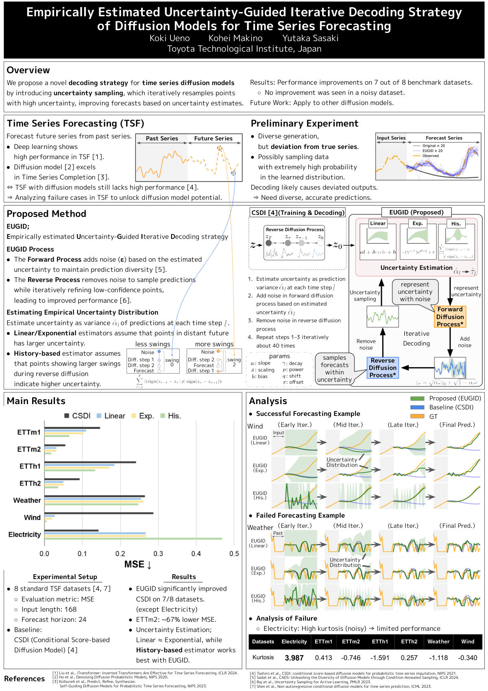
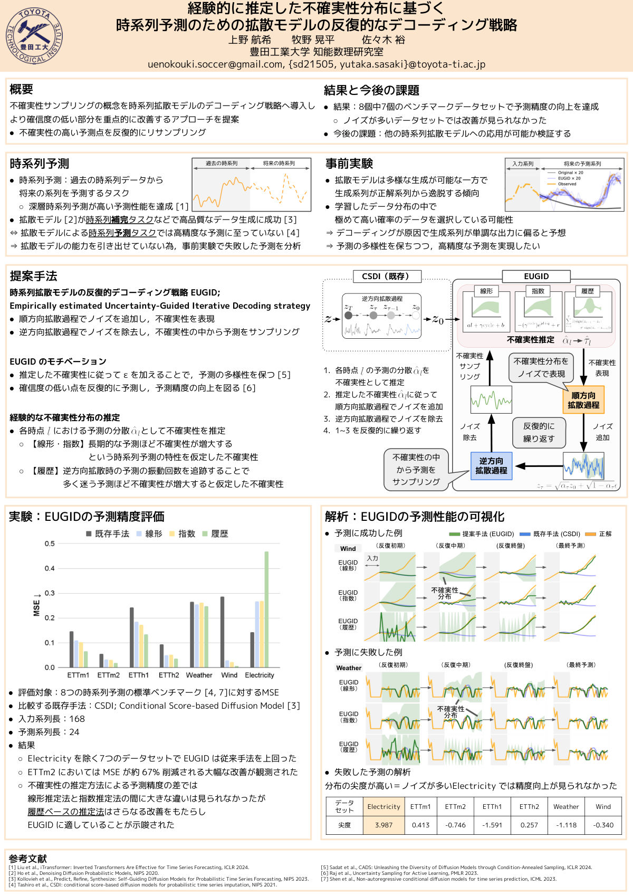

EUGID — English poster
IJCAI 2025 · AI4TS Workshop
Research
Uncertainty in generative forecasting, and post-training robot foundation models so they hold up on real hardware.
01 Papers
IJCAI 2025 · AI4TS Workshop
EUGID brings uncertainty sampling into the decoding loop of a time series diffusion model: it estimates the variance of the prediction at each time step, re-adds noise in proportion to that uncertainty, and iteratively resamples the points it is least confident about. It improves on CSDI across 7 of 8 standard benchmarks — roughly 67% lower MSE on ETTm2 — and the history-based uncertainty estimator works best.
JSAI 2025 · 第39回 人工知能学会全国大会
The Japanese-language presentation of the same work, given at the 39th Annual Conference of the Japanese Society for Artificial Intelligence.
Under review · Transactions on Artificial Intelligence
A journal-length treatment of the decoding strategy, currently under review.
02 Posters
Click a poster to open the full-resolution PDF.

IJCAI 2025 · AI4TS Workshop

JSAI 2025 · 人工知能学会全国大会
03 Challenges
RSS 2026 · Post-Training for Robotics Foundation Models Challenge
HIL-aware data curation plus reward-weighted SFT, using a VLM as the reward model. Presented the technical report and poster and joined the panel discussion at the RSS 2026 workshop in Sydney.